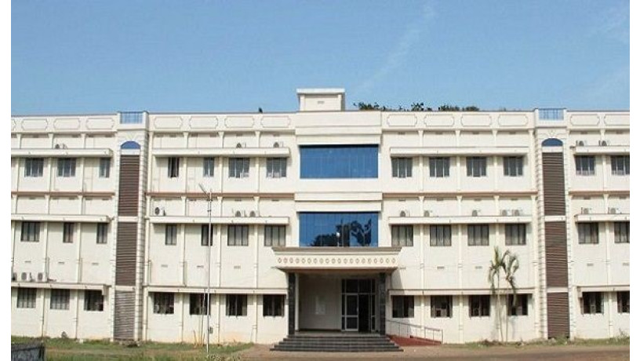

<!DOCTYPE html>
<html lang="en">
    <head>
        <title>
            Narasimha Jntuk Ece
        </title>
       
          <meta name="viewport" content="width=device-width">
        <link rel="stylesheet" href="style.css">
        <link href="https://cdn.jsdelivr.net/npm/bootstrap@5.0.1/dist/css/bootstrap.min.css" rel="stylesheet" >
        <link href="https://cdn.jsdelivr.net/npm/@fortawesome/fontawesome-free@5.15.3/css/fontawesome.min.css" rel="stylesheet">
        <script src="https://cdn.jsdelivr.net/npm/bootstrap@5.0.1/dist/js/bootstrap.bundle.min.js" ></script>
        
    </head>
    <body>
     
        <!--Navigation-->
        <section id="nav-bar">
            <nav class="navbar navbar-expand-lg navbar-light">
                <div class="container-fluid">
                  <a class="navbar-brand" href="#"></a>
                  <button class="navbar-toggler" type="button" data-bs-toggle="collapse" data-bs-target="#navbarNav" aria-controls="navbarNav" aria-expanded="false" aria-label="Toggle navigation">
                    <span class="navbar-toggler-icon"></span>
                  </button>
                  <div class="collapse navbar-collapse" id="navbarNav">
                    <ul class="navbar-nav " style="margin-left:0px;">
                      <li class="nav-item ">
                        <a class="nav-link active" aria-current="page" id="scrollspyhome">Home</a>
                      </li>
                      <li class="nav-item">
                        <a class="nav-link active" href="#scrollspyAboutus">About us</a>
                      </li>
                      <li class="nav-item">
                        <a class="nav-link active" href="#scrollspyFaculty">Faculty</a>
                      <li class="nav-item">
                        <a class="nav-link active" href="#scrollspysyllabus" >syllabus</a>
                      <li class="nav-item">
                        <a class="nav-link active" href="#scrollspybooks">Books</a>
                      </li>
                      <li class="nav-item">
                        <a class="nav-link active" href="#scrollspyjobs">Jobs</a>
                      </li>
                      <li class="nav-item">
                        <a class="nav-link active" href="#scrollspytimetable" > Time Table </a>
                      </li>
                        <li class="nav-item">
                        <a class="nav-link active" href="#scrollspylinks" >Links</a>
                      </li>
                    </ul>
                  </div>
                </div>
              </nav>
        </section>
    
    <h1>Electronics and Communication Engineering</h1>
    <div id="slider">
        <div id="headerSlider" class="carousel slide" data-bs-ride="carousel">
            <div class="carousel-inner">
              <div class="carousel-item active">
                
              </div>
              <div class="carousel-item">
                
              </div>
              <div class="carousel-item">
                
              </div>
            </div>
            <button class="carousel-control-prev" type="button" data-bs-target="#headerSlider" data-bs-slide="prev">
              <span class="carousel-control-prev-icon" aria-hidden="true"></span>
              <span class="visually-hidden">Previous</span>
            </button>
            <button class="carousel-control-next" type="button" data-bs-target="#headerSlider" data-bs-slide="next">
              <span class="carousel-control-next-icon" aria-hidden="true"></span>
              <span class="visually-hidden">Next</span>
            </button>
          </div>
    </div>
      
    <section id="about">
        <div class="us">
            <div class="row">
                <div class="col-md-8">
                    <h2 id="scrollspyAboutus">About us</h2>
                    <div class="about-content">
                       <p style="color:rgb(61, 156, 98)"> “Electronics and Communication Engineering deals with the electronic devices and software applications. It is an interface of chip level hardware and information technology”.</p>
                       <p> Electronics and communication engineering is an emerging field of engineering.</p>

                        In first half of the course, the students go through the basic engineering concept, physics, mathematics and chemistry.
                        
                        In the second half of the course, the students go through the core study of communication such as design, digital electronics, fundamental of Electronics engineering, signal & circuit, electronic circuits, VLSI, power electronics, computer architecture, and control system.
                        <p>
                         <ul>
                           <li> Electronics and Communication Engineering has expanded in various specializations as the following.</li>
                           <li>Signal Processing</li>
                           <li>elecommunications Engineering</li>
                            <li>Control Engineering</li>
                            <li>Instrumentation Engineering</li>
                            <li>Computer Engineering</li>
                            <li>VLSI design Engineering</li>
                         </ul>
                         </p>
                    </div>
                   
                </div>
               
            </div>
            
        </div>
    </section>
    <section id="Faculty">
      <h2 id="scrollspyFaculty">Faculty</h2>
     
  <div id="container">
  <table class="table table-bordered" style="border-color: black; " >
    <tbody>
        <tr>
            <th scope="row"></th>
            <th colspan="2" scope="column">Name</th>
            <th scope="column">Photo</th>
            <th scope="column">Subject</th>
            
        </tr>
        <tr>
            <th scope="row">1</th>
          <td colspan="2">Mrs.Gowthami Yadala</td>
          <td></td>
          <td>Constitution of India</td>
        </tr>
        <tr>
          <th scope="row">2</th>
          <td colspan="2" >Mrs.D.Viswa Bharathi</td>
          <td></td>
          <td>Network Analysis</td>
        </tr>
        <tr>
          <th scope="row">3</th>
          <td colspan="2" >Mr.C.Naga Kota Reddy</td>
          <td></td>
          <td>Basic Electrical Engineering</td>
        </tr>
        <tr>
          <th scope="row">4</th>
          <td colspan="2" >Mr.D.Rajesh</td>
          <td></td>
          <td>Applied Physics</td>
        </tr>
        <tr>
          <th scope="row">5</th>
          <td colspan="2" >Ms.B.Sundara Leela</td>
          <td></td>
          <td>Object Oriented Design & Programming Using Java</td>
        </tr>
        <tr>
          <th scope="row">6</th>
          <td colspan="2" >Dr.V.Ravindranath</td>
          <td></td>
          <td>Mathematics-2</td>
        </tr>
        <tr>
          <th scope="row">7</th>
          <td colspan="2" >Dr.Avala Mallikarjuna Prasad</td>
          <td></td>
          <td>Network Analysis</td>
        </tr>
        <tr>
          <th scope="row">8</th>
          <td colspan="2" >Mrs.Jhansi Rani Kaka</td>
          <td></td>
          <td>Engineering Exploration Project-Design Thinking</td>
        </tr>
        <tr>
          <th scope="row">9</th>
          <td colspan="2" >Mrs.Krishnaveni Challa</td>
          <td></td>
          <td>Electronic Workshop Lab</td>
        </tr>
        <tr>
          <th scope="row">10</th>
          <td colspan="2" >Mr.Venkata Subrahmanyam Sripadu</td>
          <td></td>
          <td>Applied Physics Lab</td>
        </tr>
        <tr>
          <th scope="row">11</th>
          <td colspan="2" >Ms.Prasanthi Badugu</td>
          <td></td>
          <td>Electronic Workshop Lab</td>
        </tr>
        <tr>
          <th scope="row">12</th>
          <td colspan="2" >Ms.Joshi Rani Kothapalli</td>
          <td></td>
          <td>Basic Electrical Engineering Lab</td>
        </tr>
        <tr>
          <th scope="row">13</th>
          <td colspan="2" >Mr.Venkata Naga Ashok Kumar Attaluri</td>
          <td></td>
          <td>Applied Physics Virtual Lab</td>
        </tr>
        <tr>
          <th scope="row">14</th>
          <td colspan="2">Mr.V.Shanmukh Naga Raju</td>
          <td></td>
          <td>Basic Electrical Engineering Lab</td>
        </tr>
        <tr>
          <th scope="row">15</th>
          <td colspan="2" >Ms.V.V.S.Vijaya Madhuri</td>
          <td></td>
          <td>Applied Physics Virtual Lab</td>
        </tr>
        <tr>
          <th scope="row">16</th>
        <td colspan="2">Dr.V V Narasimha Murthy</td>
        <td></td>
        <td>Basic Electrical Engineering</td>
      </tr>
      </tbody>
    
</table>
        </div>
  </section>
  <!---------------------------------------------!syllabus------------------------------------------------->
  <section id="syllabus">
    <h2 id="scrollspysyllabus">Syllabus</h2>
    <div class="accordion" id="accordionExample">
      <div class="accordion-item">
        <h2 class="accordion-header" id="headingOne">
          <button class="accordion-button" type="button" data-bs-toggle="collapse" data-bs-target="#collapseOne" aria-expanded="true" aria-controls="collapseOne">
            Mathematics - II
          </button>
        </h2>
        <div id="collapseOne" class="accordion-collapse collapse show" aria-labelledby="headingOne" data-bs-parent="#accordionExample">
          <div class="accordion-body">
            <p><strong>UNIT – I: Solving systems of linear equations, Eigen values and Eigen vectors: </strong>
              Rank of a matrix by echelon form and normal form – Solving system of homogeneous and nonhomogeneous linear equations – Gauss Eliminationmethod – Eigen values and Eigen vectors and
              properties.</p>
              <p> <strong>UNIT - II: Cayley–Hamilton theorem and Quadratic forms:</strong>
              Cayley-Hamilton theorem (without proof) – Applications – Finding the inverse and power of a 
              matrix by Cayley-Hamilton theorem – Reduction to Diagonal form – Quadratic forms and nature of 
              the quadratic forms – Reduction of quadratic form to canonical forms by orthogonal transformation.
              Singular values of a matrix, singular value decomposition .</p>
              <p><strong>UNIT – III: Iterative methods: </strong>
              Introduction– Bisection method–Secant method – Method of false position– Iteration method –
              Newton-Raphson method (One variable and simultaneous Equations) – Jacobi and Gauss-Seidel 
              methods for solving system of equations numerically.</p>
              <p> <strong>UNIT – IV: Interpolation: </strong>
              Introduction– Errors in polynomial interpol10 hrs)ation – Finite differences– Forward differences–
              Backward differences –Central differences – Relations between operators – Newton’s forward and 
              backward formulae for interpolation – Interpolation with unequal intervals – Lagrange’s 
              interpolation formula– Newton’s divide difference formula</p>
              <p><strong>UNIT - V: Numerical differentiation and integration, Solution of ordinary differential 
              equations with initial conditions: </strong>
              Numerical differentiation using interpolating polynomial – Trapezoidal rule– Simpson’s 1/3rd
              and 
              3/8th
              rule– Solution of initial value problems by Taylor’s series– Picard’s method of successive 
              approximations– Euler’s method – Runge-Kutta method (second and fourth order).</p>
              
          </div>
        </div>
      </div>
      <div class="accordion-item">
        <h2 class="accordion-header" id="headingTwo">
          <button class="accordion-button collapsed" type="button" data-bs-toggle="collapse" data-bs-target="#collapseTwo" aria-expanded="false" aria-controls="collapseTwo">
            Object Oriented Design & Programming Analysis 
          </button>
        </h2>
        <div id="collapseTwo" class="accordion-collapse collapse" aria-labelledby="headingTwo" data-bs-parent="#accordionExample">
          <div class="accordion-body">
          <p><strong>Unit I:
            Introduction to Java :</strong> Basics of Java programming, Data types, Variables, Operators, Control structures 
            including selection, Looping, Java methods, Overloading, Math class, Arrays in java.
            Objects and Classes : Basics of objects and classes in java, Constructors, Finalizer, Visibility modifiers, 
            Methods and objects, Inbuilt classes like String, Character, StringBuffer, File, this reference.</p>
           <p><strong>Unit II:
            Inheritance and Polymorphism :</strong> Inheritance in java, Super and sub class, Overriding, Object class, 
            Polymorphism, Dynamic binding, Generic programming, Casting objects, Instance of operator, Abstract class, 
            Interface in java, Package in java, UTILpackage.</p>
            <p><strong>Unit III:
            Event and GUI programming :</strong> Event handling in java, Event types, Mouse and key events, GUI Basics, 
            Panels, Frames, Layout Managers: Flow Layout, Border Layout, Grid Layout, GUI components like Buttons, 
            Check Boxes, Radio Buttons, Labels, Text Fields, Text Areas, Combo Boxes, Lists, Scroll Bars, Sliders, 
            Windows, Menus, Dialog Box, Applet and its life cycle, Introduction to swing, Creating a swing applet, swing 
            controls and components.</p>
            <p><strong>Unit IV:
            I/O programming: </strong>Text and Binary I/O, Binary I/O classes, Object I/O, Random Access 
            Files. Event driven model, handling events</p>
            <p><strong> Unit V:
            Multithreading in java:</strong> Thread life cycle and methods, Runnable interface, Thread synchronization, Exception 
            handling with try-catch-finally, Collections in java, Introduction to JavaBeans and Network Programming</p>
          </div>
        </div>
      </div>
      <div class="accordion-item">
        <h2 class="accordion-header" id="headingThree">
          <button class="accordion-button collapsed" type="button" data-bs-toggle="collapse" data-bs-target="#collapseThree" aria-expanded="false" aria-controls="collapseThree">
            Applied Physics
          </button>
        </h2>
        <div id="collapseThree" class="accordion-collapse collapse" aria-labelledby="headingThree" data-bs-parent="#accordionExample">
          <div class="accordion-body">
           <p> <strong> Unit-I:</strong></p>
            <p><strong>Interference:</strong> Principle of superposition –Interference of light - Interference in thin films 
            (Reflection Geometry) & applications - Colors in thin films- Newton’s RingsDetermination of wavelength and refractive index.</p>
            <p><strong>Diffraction:</strong> Introduction - Fresnel and Fraunhofer diffraction - Fraunhofer diffraction due to 
            single slit, double slit - N-slits (Qualitative) – Diffraction Grating - Dispersive power and 
            resolving power of Grating(Qualitative).</p>
            <p><strong>Polarization:</strong> Introduction-Types of polarization - Polarization by reflection, refraction and 
            Double refraction - Nicol’s Prism -Half wave and Quarter wave plates.</p>
            <p><strong>Unit-II:</strong> </p>
              <p><strong>Lasers:</strong> Introduction – Characteristics of laser – Spontaneous and Stimulated emissions of 
            radiation – Einstein’s coefficients – Population inversion – Lasing action - Pumping 
            mechanisms – Ruby laser – He-Ne laser - Applications of lasers.</p>
            <p><strong>Fiber optics:</strong> Introduction –Principle of optical fiber- Acceptance Angle - Numerical Aperture -
            Classification of optical fibers based on refractive index profile and modes-
            Propagation of electromagnetic wave through optical fibers - Applications. </p>
            <p><strong>Unit III:</strong></p>
              <p><strong>Quantum Mechanics: </strong>Dual nature of matter – Heisenberg’s Uncertainty Principle –
              Significance and properties of wave function – Schrodinger’s time independent and dependent 
              wave equations– Particle in a one-dimensional infinite potential well.</p>
              <p><strong>Free Electron Theory:</strong> Classical free electron theory (Qualitative with discussion of merits 
              and demerits) – Quantum free electron theory– Equation for electrical conductivity based on 
              quantum free electron theory- Fermi-Dirac distribution- Density of states (3D) - Fermi 
              energy.</p>
              <p><strong>Band theory of Solids:</strong> Bloch’s Theorem (Qualitative) - Kronig - Penney model 
              (Qualitative)- E vs K diagram - v vs K diagram - effective mass of electron – Classification 
              of crystalline solids–concept of hole.</p>
              <p><strong>Unit-IV:</strong></p>
                <p><strong>Dielectric Materials:</strong> Introduction - Dielectric polarization - Dielectric polarizability, 
                Susceptibility and Dielectric constant - Types of polarizations- Electronic (Quantitative), 
                Ionic (Quantitative) and Orientation polarizations (Qualitative) - Lorentz internal fieldClausius- Mossotti equation- Piezoelectricity.</p>
                <p><strong>Magnetic Materials:</strong> Introduction - Magnetic dipole moment -MagnetizationMagnetic susceptibility and permeability - Origin of permanent magnetic moment -
                Classification of
                magnetic materials: Dia, para, Ferro, antiferro & Ferri magnetic materials - Domain concept 
                for Ferromagnetism & Domain walls (Qualitative) - Hysteresis - soft and hard magnetic 
                materials- Eddy currents- Engineering applications</p>
                <p><strong>Unit-V: </strong></p>
                  <p><strong>Semiconductors:</strong> Introduction- Intrinsic semiconductors – Density of charge carriers – Electrical 
                  conductivity – Fermi level – extrinsic semiconductors – density of charge carriers – dependence of Fermi 
                  energy on carrier concentration and temperature - Drift and diffusion currents – Einstein’s
                  equation- Hall effect – Hall coefficient –Applications of Hall effect.</p>
                  <p><strong>Superconductors:</strong> Introduction – Properties of superconductors – Meissner effect – Type I and Type II 
                  superconductors – BCS theory (Qualitative) – Josephson effects (AC and DC) – SQUIDs
                  – High Tc superconductors – Applications of superconductors</p>
          </div>
        </div>
      </div>
      <div class="accordion-item">
        <h2 class="accordion-header" id="headingFour">
          <button class="accordion-button collapsed" type="button" data-bs-toggle="collapse" data-bs-target="#collapseFour" aria-expanded="false" aria-controls="collapseFour">
            Basic Electrical Engineering
          </button>
        </h2>
        <div id="collapseFour" class="accordion-collapse collapse" aria-labelledby="headingFour" data-bs-parent="#accordionExample">
          <div class="accordion-body">
              <p><strong>Unit I:
                DC Machines:</strong>
                Principle of operation of DC generator – emf equation – types of DC machines – torque 
                equation of DC motor – applications – three point starter - losses and efficiency - swinburne’s 
                test - speed control methods – OCC of DC generator- Brake test on DC Shunt motornumerical problems</p>
                <p><strong>Unit II:
                Transformers:</strong>
                Principle of operation of single phase transformer constructional features – EMF equation –
                Losses and efficiency of transformer- regulation of transformer – OC & SC tests 
                predetermination of efficiency and regulations – Sumpner’s test-NumericalProblems.</p>
                <p><strong>Unit III:
                Synchronous Generators:</strong>
                Principle of operation and construction of alternators – types of alternators Regulation of 
                alternator by synchronous impedance method-EMF equation of three phase alternator</p>
               <p> <strong>Synchronous Motors:</strong>
                Construction of three phase synchronous motor - operating principle –equivalent circuit of 
                synchronous motor.</p>
                <p><strong>Unit IV:
                Induction Machine:</strong> Principle of operation and construction of three-phase induction motors 
                – slip ring and squirrel cage motors – slip-torque characteristics – efficiency calculation –
                starting methods-Brake test on 3-Phase Induction Motor.</p>
               <p><strong>Unit V:
                Special Machines: </strong>Principle of operation and construction - single phase induction motor -
                shaded pole motors – capacitor motors and AC servomotor.</p>
            </div>
        </div>
      </div>
      <div class="accordion-item">
        <h2 class="accordion-header" id="headingFive">
          <button class="accordion-button collapsed" type="button" data-bs-toggle="collapse" data-bs-target="#collapseFive" aria-expanded="false" aria-controls="collapseFive">
            Network Analysis
          </button>
        </h2>
        <div id="collapseFive" class="accordion-collapse collapse" aria-labelledby="headingFive" data-bs-parent="#accordionExample">
          <div class="accordion-body">
          <p><strong>UNIT – I:
            Introduction to Electrical Circuits :</strong> Network elements classification, Electric charge and 
            current, Electric energy and potential, Resistance parameter – series and parallel combination, 
            Inductance parameter – series and parallel combination, Capacitance parameter – series and 
            parallel combination. Energy sources: Ideal, Non-ideal, Independent and dependent sources, 
            Source transformation, Kirchoff’s laws, Mesh analysis and Nodal analysis problem solving 
            with resistances only including dependent sources also.</p>
            <p><strong>Fundamentals and Network Topology:</strong> Definitions of terms associated with periodic 
            functions: Time period, Angular velocity and frequency, RMS value, Average value, Form 
            factor and peak factor- problem solving, Phase angle, Phasor representation, Addition and 
            subtraction of phasors, mathematical representation of sinusoidal quantities, explanation 
            with relevant theory, problem solving. Principal of Duality withexamples.</p>
            <p><strong>Network Topology:</strong> Definitions of branch, node, tree, planar, non-planar graph, incidence 
            matrix, basic tie set schedule, basic cut set schedule.</p>
            <p><strong>UNIT – II:
            Transients :</strong>First order differential equations, Definition of time constants, R-L circuit, R-C 
            circuit with DC excitation, Evaluating initial conditions procedure, second order differential 
            equations, homogeneous, non-homogenous, problem solving using R-L-C elements with DC 
            excitation and AC excitation, Response as related to s-plane rotation of roots. Solutions using 
            Laplace transform method.</p>
           <p><strong> UNIT – III:
            Steady State Analysis of A.C Circuits :</strong>Impedance concept, phase angle, series R-L, R-C, 
            R-L- C circuits problem solving. Complex impedance and phasor notation for R-L, R-C, R-LC problem solving using mesh and nodal analysis, Star-Delta conversion, problem solving. 
            </p>
            <p><strong>Coupled Circuits:</strong> Self inductance, Mutual inductance, Coefficient of 
            coupling, analysis of coupled circuits, Natural current, Dot rule of coupled circuits, 
            Conductively coupled equivalent circuits- problem solving.</p>
            <p><strong>UNIT – IV:
            Resonance:</strong> Introduction, Definition of Q, Series resonance, Bandwidth of series resonance, 
            Parallel resonance, Condition for maximum impedance, current in anti resonance, Bandwidth 
            of parallel resonance, general case-resistance present in both branches, anti resonance at all 
            frequencies. </p>
            <p><strong>Network Theorems:</strong> Thevinin’s, Norton’s, Milliman’s, Reciprocity, Compensation, 
            Substitution, Superposition,Max Power Transfer, Tellegens- problem solving using 
            dependent sources also.</p>
            
            <p><strong>UNIT – V;
            Two-port Networks:</strong> Relationship of two port networks, Z-parameters, Y-parameters, 
            Transmission line parameters, h-parameters, Inverse h-parameters, Inverse Transmission line 
            parameters, Relationship between parameter sets, Parallel connection of two port networks, 
            Cascading of two port networks, series connection of two port networks, problem solving 
            including dependent sources also.</p>
            </div>
        </div>
      </div>
      <div class="accordion-item">
        <h2 class="accordion-header" id="headingSix">
          <button class="accordion-button collapsed" type="button" data-bs-toggle="collapse" data-bs-target="#collapseSix" aria-expanded="false" aria-controls="collapseSix">
           Electronic Workshop Lab
          </button>
        </h2>
        <div id="collapseSix" class="accordion-collapse collapse" aria-labelledby="headingSix" data-bs-parent="#accordionExample">
          <div class="accordion-body">
           <p><strong>I. Identificationofcomponents:</strong>
  <li> Resistors:- Types of Resistors, Value of Resistance using colorcode,DRBS.</li>
<li>Capacitors:- Types of capacitors, value of capacitance using colorcode,DCBS.</li>
<li> Inductors:- Types ofInductors,DLB</li>
<li> Rheostats:- Types of Rheostats, Types ofpotentiometers,Relays.</li>
<li> Switches:- TypesofSwitches.</li>
<li> Cables: TypesofCables.</li>
<li> Types ofInstrumentsused.</li></p>
<p><strong>Identification of active elements.
</strong>

<li> Three Terminal Devices: BJT, UJT, SCR, FET,MOSFET,TRIAC.</li>
<li> Digital and Analog ICs. (TO and Flat packages) ICregulatorstypes.</li>
<li> Testing of above components usingMultimeter.</li>
<p><strong>II. LaboratoryEquipment:</strong>
  <li> Meters:-</li>
  <ol>
<li> Types of Voltmeters, Types of Ammeters both AnalogandDigital.</li>
<li>Types of Multi meters (Analog&Digital)</li>
<li>AVO Meters.</li>
<li> FETinputVoltmeter.</li></ol>
<li>Laboratory Function Generators andAudioOscillators.</li>
<li>PowerSupplies.</li>
<li> RFgenerators.</li>
<li> Different TypesofTransformers. (Power, AF, RF,etc.)</li></p>
<p><strong>III. Solderingpractice

Tools Kit:</strong>
<li> Insulatednoseplayer</li>
<li> Insulatedcuttingplayer</li>
<li>
Screw driverkit</li>
<li>Electricaltester</li>
•<li> Soldering iron,Lead,Flex</li></p>

<p><strong>IV. PCB layoutandDesign:</strong></p>
<p>Materials required, centimeter graph sheets, marker.</p>
<p><strong>V. Testing of Components.</strong></p>
<p>Active and Passive Components</p>
<p><strong>VI. CRO</strong></p>
<P>Acquaintance with CRO, 
Measurements on CR</p>
            </div>
        </div>
      </div>
     
      
    
     </div>

  </section>
  <!----------------------------------------books---------------------------------->
  <section id="books">
    <h2 id="scrollspybooks">Books</h2>
    <div id="container">
    
   <div class="card" style="width: 18rem;">
      
      <div class="card-body">
        <h5 class="card-title">Applied Physics</h5>
        <p class="card-text" style="padding-top: 20px;">Physics is the branch of science that deals with the structure of matter and how the fundamental constituents of the universe interact.</p>
        <a href="first.html" class="btn btn-primary">Read More</a>
      </div>
    </div>
    <div class="card" style="width: 18rem;">
      
      <div class="card-body">
        <h5 class="card-title">Mathematics-II</h5>
        <p class="card-text" style="padding-top: 20px;">Mathematics is a necessary avenue to scientific knowledge which opens new vistas of mental activity</p>
        <a href="B V Ramana - Higher Engineering Mathematics-McGraw-Hill Education (2018) (1).pdf" class="btn btn-primary">Read More</a>
      </div>
    </div>
    
    <div class="card" style="width: 18rem;">
      
      <div class="card-body">
        <h5 class="card-title">Basic Electrical Engineering</h5>
        <p class="card-text">Although a far greater percentage of the electrical machines in service are a.c.
          machines, the d.c. machines are of considerable industrial importance.</p>
        <a href="Principles-of-Electrical-Machines-vk-Mehta.pdf" class="btn btn-primary">Read More</a>
      </div>
    </div>
    <div class="card" style="width: 18rem;">
      
      <div class="card-body">
        <h5 class="card-title">Network Analysis</h5>
        <p class="card-text"> 
           The rover which are on Mars that
          it takes about 20 minutes for communications to go from the Earth to
          Mars. </p>
        <a href="Fundamentals of Electric Circuits (5th Ed)(gnv64)(1).pdf" class="btn btn-primary">Read More</a>
      </div>
    </div>
    <div class="card" style="width: 18rem;">
      
      <div class="card-body">
        <h5 class="card-title">Java</h5>
        <p class="card-text">Java is a high-level programming language originally developed by Sun Microsystems and released in 1995. </p>
        <a href="https://www.tutorialspoint.com/java/index.htm" class="btn btn-primary">Read More</a>
      </div>
    </div>
    </div>
  </section>
  <section id="jobs">
    <h2 id="scrollspyjobs">Jobs</h2>
    <div class="row">
      <div class="col-md-6">
        <div class="about-content">
          <p>This field has an opportunity in two types of companies, Telecom Industries and Software Industries.</p>

           <p> An electronics and communication engineer can work in aviation and avionics, consumer electronics, electricity plant, manufacturing, transportation, communication & telecommunication, computer application, radio & television, diagnostic equipment manufacturing and offshore companies.
            
            There is an opportunity to get a central government job, state government job and in public & private sectors.</p>
            
          
            
           <strong> Some job titles are listed here:</strong>
           <p> 
            <li>Electronics Engineer</li>
            <li>Field Test Engineer</li>
            <li>Network Planning Engineer</li>
            <li>Electronics and Communications Consultant</li>
            <li>Customer Support Engineer</li>
            <li>Electronics Technician</li>
            <li>Associate Firstline Technician</li>
            <li>Research and Development Software Engineer</li>
            <li>Service Engineer</li>
            <li>Senior Sales Manager</li>
            <li>Technical Director</li>
            <strong>Here are some reputed firms which require the electronics and communication engineers whenever:</strong>
            
            <li>BEL</li>
            <li>DMRC</li>
            <li>Siemens</li>
            <li>Texas Instruments</li>
            <li>Intel</li>
            <li>nVIDIA</li>
            <li>Philips Electronics</li>
            <li>Motorola</li>
            <li>Samsung</li>
            <li>Conexant and Flextronics</li>
            <li>DRDO</li>
            <li>ISRO</li>
            <li>Infosys</li>
            <li>TCS</li>
            <li>Wipro</li>
            <li>Accenture</li>
            <li>HCL Technologies</li>
            <li>Tech Mahindra</li></p>
        </div>
      </div>
    </div>

  </section>
<!----------------------------------------------------------------time table------------------------------------------->
 <section id="time">
    <h2 id="scrollspytimetable">Time Table</h2>
    <table class="table table-bordered" style="border:3px;">
      <tr>
        <th scope="row">Days and Hours</th>
        <th scope="row">9.00 AM to 10.00 AM</th>
        <th scope="row">10.00 AM to 11.00 AM</th>
        <th scope="row" >11.10 AM to 12.10 PM</th>
        <th scope="row">12.10 PM to 1.10 PM</th>
        <th scope="row">2.00 PM to 3.00 PM</th>
        <th scope="row">3.00 PM to 4.00 PM</th>
        <th scope="row">4.00 PM to 5.00 PM</th>

      </tr>
      <tr>
        <th scope="column">Monday</th>
        <td>OOP&J</td>
        <td>NA</td>
        <td colspan="2">Applied Physics Virtual Lab</td>
        <td colspan="3">Basic Electrical Engineering Lab</td>
      </tr>
      <tr>
        <th scope="column">Tuesday</th>
        <td>OOP&J</td>
        <td>AP</td>
        <td>M-II</td>
        <td>BEE</td>
        <td colspan="3">Applied Physics Lab</td>
      </tr>
      <tr>
        <th scope="column">Wednesday</th>
        <td>EEPDT</td>
        <td>AP</td>
        <td>*****</td>
        <td>NA</td>
        <td>CI</td>
        <td>M-II</td>
        <td>*****</td>
      </tr>
      <tr>
        <th scope="column">Thursday</th>
        <td>*****</td>
        <td>M-II</td>
        <td>OOP&J</td>
        <td>AP</td>
        <td>BEE</td>
        <td>NA</td>
        <td>*****</td>
      </tr>
      <tr>
        <th scope="column">
          Friday
        </th>
        <td>*****</td>
        <td>OOP&J</td>
        <td>AP</td>
        <td>BEE</td>
        <td colspan="3">Electronic Workshop Lab</td>
      </tr>
      <tr>
        <th scope="column">Saturday</th>
        <td>CI</td>
        <td>M-II</td>
        <td>BEE</td>
        <td>NA</td>
        <td colspan="3">*****</td>
      </tr>
    </table>


  </section>
  <section id="Links">
    <h2 id="scrollspylinks">Links</h2>
    <div class="alert alert-primary" role="alert">
      Meet Link for <a href="https://meet.google.com/fwy-ipbv-zuh" class="alert-link">Network Analysis</a>class. Give it a click 
    </div>
    <div class="alert alert-secondary" role="alert">
      Meet Link for <a href="https://meet.google.com/vor-sdiu-zpo" class="alert-link">Java</a>class. Give it a click 
    </div>
    <div class="alert alert-success" role="alert">
      Meet Link  for <a href="https://meet.google.com/beu-dnej-vsg" class="alert-link">Basic Electrical Engineering</a>class. Give it a click 
    </div>
    <div class="alert alert-danger" role="alert">
      Meet Link for <a href="https://meet.google.com/wta-gzqv-bbf" class="alert-link">Mathematics-II</a>class. Give it a click 
    </div>
    <div class="alert alert-warning" role="alert">
      Meet Link for <a href="https://meet.google.com/zyg-yxkx-jgt" class="alert-link">Engineering Exploration Project-Design Thinking</a>class. Give it a click 
    </div>
    <div class="alert alert-info" role="alert">
      Website of <a href="https://vrnathjntuk.gnomio.com/login/index.php" class="alert-link">Mathematics-II</a>. Give it a click
    </div>
  </section>
    
    </body>
</html>
